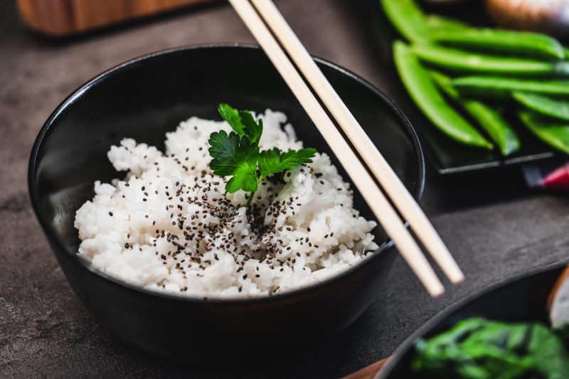

Jasmine Rice

A great addition to any asian meal
This coconut jasmine rice is one of my favorite rice recipes. It goes great with just about anything. Try a ginger chicken main dish with it!
- 1 (14 ounce) can of coconut milk
- 1 and 1/4 cups water
- 1 tsp white sugar
- 1 pinch of salt
- 1 1/2 cups jasmine rice
- Rinse rice twice to remove some starch.
- Mix coconut milk, water and sugar in sauce pan.
- Cook over medium heat until sugar is dissolved.
- Add rice and bring to a boil.
- Cover and reduce heat, let simmer for 18 to 20 minutes.
- Fluff with a fork and server with dinner.
Back to Odin-Recipes